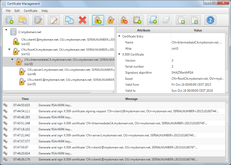

Certificate Manager overview
The Certificate Manager application supports creation and management of X.509 certificates and corresponding objects.
The application organizes the certificate objects in so called certificate stores. Technically a store is nothing more
than a directory. The directory name denotes the store name. The different certificate objects are organized in sub-directories.
Certificate Store view
This is the main window of the application. The left pane shows the certificate objects contained in the currently opened
store. The certificate objects are arranged according to their certification path. The right pane shows the details of
the currently selected certificate object. The bottom pane shows application messages like progress and status information
as well as warning and error messages issued by the application.

Certificate Manager operation
To invoke one of the following operations simply select the corresponding menu entry or push the corresponding tool bar button.
- Create a new store
Open the Create Store dialog to create a new certificate store.
- Open an existing store
Open an existing certificate store by selecting the store's directory in the select folder dialog.
- Edit store attributes
Open the Store Options dialog to adapt the options of the currently opened store.
- Edit entry options
Open the Entry Options dialog to adapt the options of the currently selected certificate object.
- Copy entry
Copy currently selected certificate object's files to the system clipboard.
- Delete entry
Delete the currently selected certificate object and all it's subsequent entries.
- Create Certificate
Open the Generate Certificate dialog to create a new certificate.
- Re-sign Certificate
Open the Generate Certificate dialog to re-sign the currently selected certificate.
- Revoke Certificate
Open the Create/Update CRL dialog to revoke the currently selected certificate.
- Manage Certificate Revocation List
Open the Create/Update CRL dialog to edit the CRL of the currently selected certificate.
- Create Certificate Signing Request
Open the Generate Certificate Signing Request dialog to create a new Certificate Signing Request.
- Re-sign Certificate Signing Request
Open the Generate Certificate Signing Request dialog to re-sign the currently selected Certificate Signing Request.
- Import entries
Open the Import dialog to import existing certificate objects in the store.
- Export entries
Open the Export dialog to export the selected certificate.